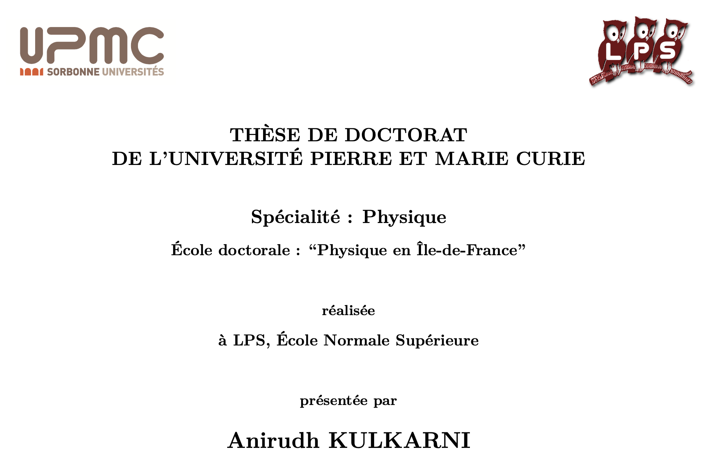
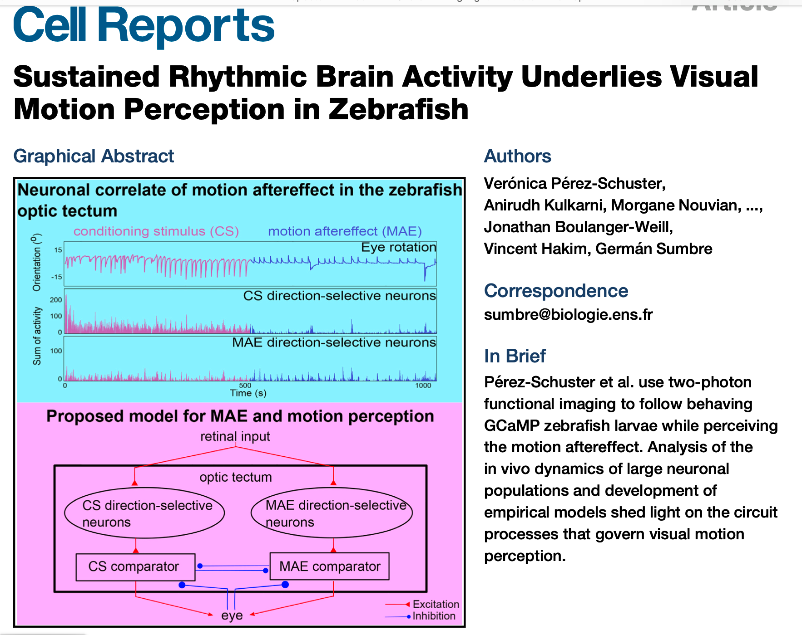
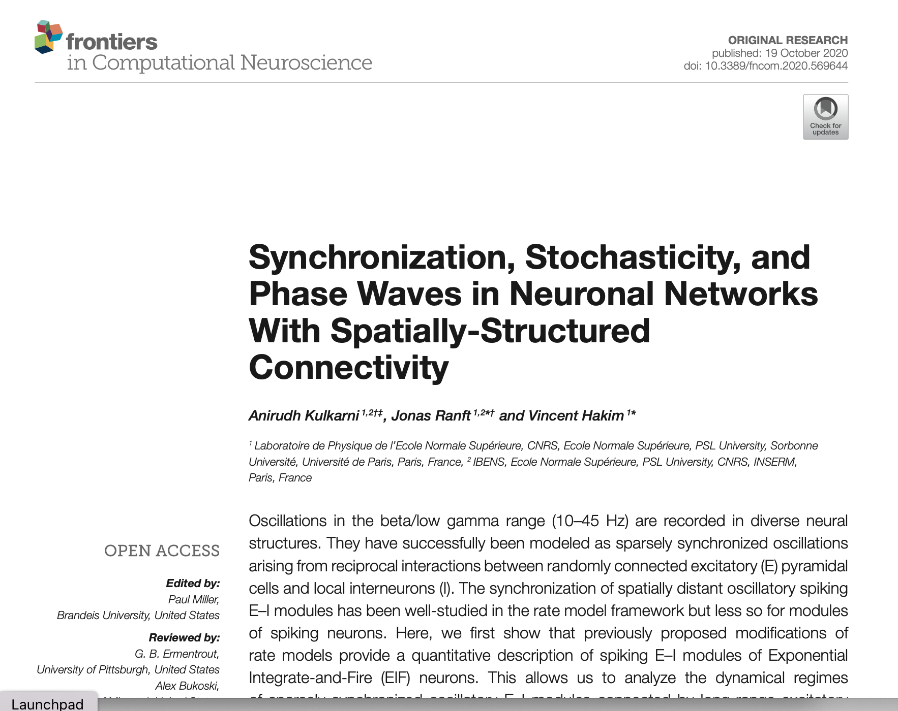
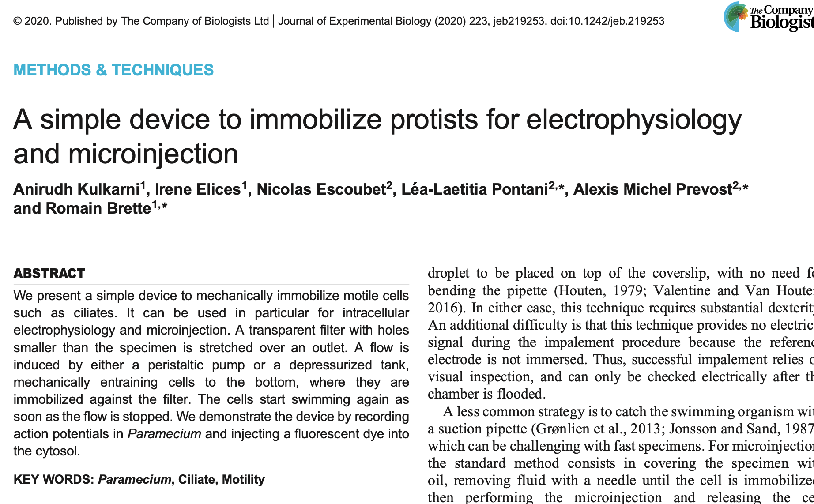
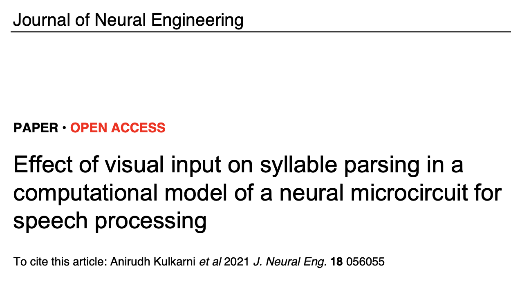
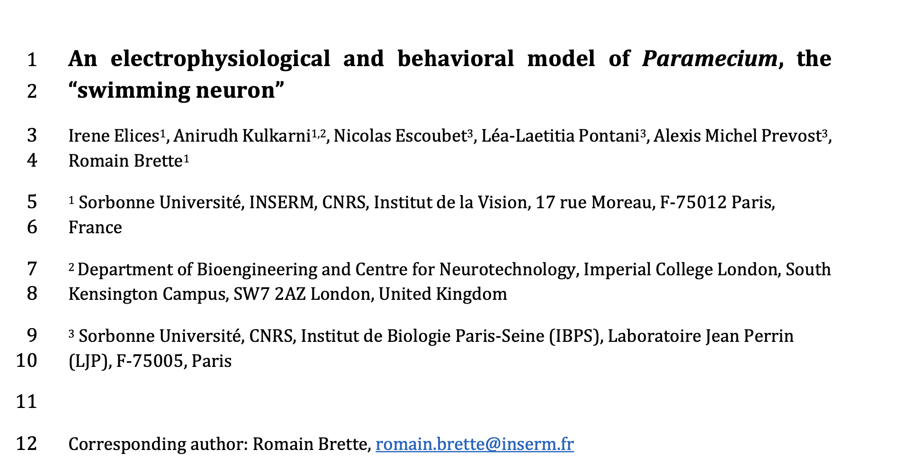

I have researched in Computational and
Experimental Neuroscience.
Please see my research articles here.
Click on the links to find the full articles .
PhD Thesis
During my PhD, I worked on two topics:
1) Experimental Neuroscience: Experimental neuroscience is performing experiements and recording brain activity to try to make more sense of the workings of the brain. I worked on the Motion After Effect in zebrafish larva. Read my thesis or skip over to the next section or ask me more.
2) Computational Neuroscience: Computational Neuroscience is very simply the computer modeling of networks of neurons to understand the principles behind the workings of the brain. I worked on understanding how different brain waves in different brain regions communicate with each other.

Motion After Effect in zebrafish larvae
I worked on an illusion called the Motion After Effect. To experience this illusion, look at something moving for a long time (~a minute). After that, look at something stationary. You would feel as if the stationary thing is moving. This illusion was reported by Aristotle who stared at a waterfall for a long time, experiencing a moving world after that.
A zebrafish larva also experiences this illusion. We can infer this from because the fish moves its eyes when it sees movement. We recorded its neuronal activity and showed that this illusion results from motion adaptation.
We found that the brain of the fish has two kinds of neurons : one that sees movement to the right and one that sees movement to the left. These two groups of neurons compete with each other. When the fish sees movement only to the right for a long time, activity in these “right” neurons decreases. This phenomenon is called Adaptation. At the end of the movement, the activity in the “left” neurons is higher for a while causing the fish to be fooled into seeing movement to the left.
Adaptation is a phenomenon seen throughout our nervous system. In simplest terms, it means that the brain gets used to new information as it does not like surprises.
We also made a simple model of this phenomenon and published it below. Read the article or ask me to know more.

Synchronization of brain waves
I worked on understanding how different brain waves in different brain regions communicate with each other.
We can measure brain activity of humans using EEG. These signals are called brain waves because they go up and down and have specific frequencies.
Brain waves can be found over many brain regions, but how do they communicate with each other?
Using computer models, we showed that these waves can either step up and down in sync or look as though they propagate from one region to another depending on factors such as noise and distance between the regions.
Read the full article below or ask me more.

Trapping paramecia
In this work, I assisted in the development of a tool to trap paramecia so that one could perform electrophysiological recordings on them.
The paramecium is a single-celled organism that swims in water and exhibits action potentials like a neuron in the brain. This activity is related to its behaviour. Whenever it has to turn around, it emits a spike like a neuron. This makes it an interesting organism to study because it could reveal something fundamental about neurons.
The tricky part about studying them is that they move too quickly. Therefore, to confine them to a region, we developed a tool to keep them in one place. Basically, the tool involves pumping water in and out at the same speed so that they don't have any place to swim.
Read the full article below or ask me more.

Adding visual input in speech processing models
It is known that seeing a speaker's face and their moving lips can improve the comprehension of speech in background noise. It is now also known that this happens even in the early stages of the brain. The mechanisms are however unclear.
Human speech can be decomposed into syllables. (E.g. The statement “How is everyone?” can be decomposed into syllables “how + is + ev+ ry+ one”). When we listen to human speech, the syllables are segregated by the theta rhythm in the brain's auditory cortex.
In our work, we showed using computer models that adding the information of the mouth to our simple models improved syllable segregation when the visual input proceeded the audio input by about 0-150 milliseconds.
Read the full article below or ask me more.

Model of a paramecium
In this work, we developed a model of the action potential mechanism in paramecium, the ‘swimming neuron’, using model fitting techniques.
The paramecium is a single-celled organism that swims in water and exhibits action potentials like a neuron in the brain. This activity is related to its behaviour. Whenever it has to turn around, it emits a spike like a neuron. This makes it an interesting organism to study because it could reveal something fundamental about neurons.
To do this work, we had to fixate the quick moving paramecium, then record its voltage activity with electrophysiological recordings and finally fitting the data to the parameters of a simplified Hodgkin-Huxley model, which is a well known model of a neuron.
Read the full article below or ask me more.
